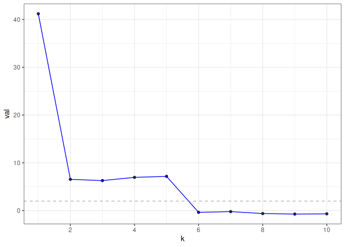

gdim estimates graph dimension using cross-validated eigenvalues, via the graph-splitting technique developed in https://arxiv.org/abs/2108.03336. Theoretically, the method works by computing a special type of cross-validated eigenvalue which follows a simple central limit theorem. This allows users to perform hypothesis tests on the rank of the graph.
Installation
You can install gdim from CRAN with:
install.packages("gdim")
# to get the development version from GitHub:
install.packages("pak")
pak::pak("RoheLab/gdim")Example
eigcv() is the main function in gdim. The single required parameter for the function is the maximum possible dimension, k_max.
In the following example, we generate a random graph from the stochastic block model (SBM) with 1000 nodes and 5 blocks (as such, we would expect the estimated graph dimension to be 5).
library(fastRG)
#> Loading required package: Matrix
B <- matrix(0.1, 5, 5)
diag(B) <- 0.3
model <- sbm(
n = 1000,
B = B,
expected_degree = 40,
poisson_edges = FALSE,
allow_self_loops = FALSE
)
A <- sample_sparse(model)Here, A is the adjacency matrix.
Now, we call the eigcv() function with k_max=10 to estimate graph dimension.
library(gdim)
eigcv_result <- eigcv(A, k_max = 10)
#> 'as(<dsCMatrix>, "dgCMatrix")' is deprecated.
#> Use 'as(., "generalMatrix")' instead.
#> See help("Deprecated") and help("Matrix-deprecated").
eigcv_result
#> Estimated graph dimension: 5
#>
#> Number of bootstraps: 10
#> Edge splitting probabaility: 0.1
#> Significance level: 0.05
#>
#> ------------ Summary of Tests ------------
#> k z pvals padj
#> 1 41.1972023 0.000000e+00 0.000000e+00
#> 2 6.5483842 2.908147e-11 2.908147e-11
#> 3 6.2885741 1.601976e-10 1.601976e-10
#> 4 6.9601015 1.700138e-12 1.700138e-12
#> 5 7.1673010 3.824537e-13 3.824537e-13
#> 6 -0.3594110 6.403562e-01 6.403562e-01
#> 7 -0.2062852 5.817159e-01 5.817159e-01
#> 8 -0.6096004 7.289367e-01 7.289367e-01
#> 9 -0.7202233 7.643062e-01 7.643062e-01
#> 10 -0.6707828 7.488205e-01 7.488205e-01In this example, eigcv() suggests k=5.
To visualize the result, use plot() which returns a ggplot object. The function displays the test statistic (z score) for each hypothesized graph dimension.
plot(eigcv_result)
Reference
Chen, Fan, Sebastien Roch, Karl Rohe, and Shuqi Yu. “Estimating Graph Dimension with Cross-Validated Eigenvalues.” ArXiv:2108.03336 [Cs, Math, Stat], August 6, 2021. https://arxiv.org/abs/2108.03336.